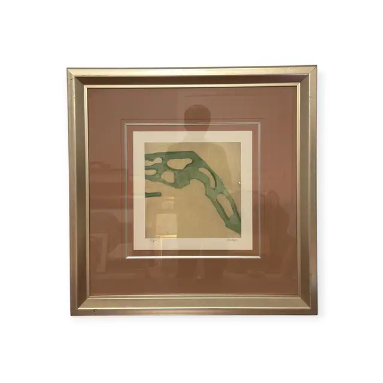
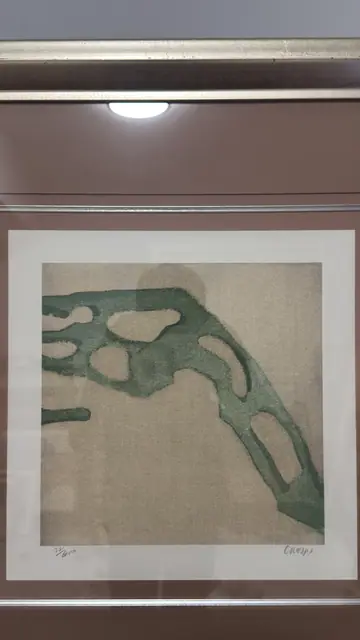
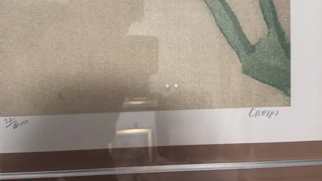

Paintings & Prints
Green Branching Form on Sand Ground, Crespi, Signed, Framed
R. Crespi · late 20th to early 21st century
Price Upon Request



About the Item
Crespi. A single sage-green shape spreads diagonally across a small square sheet, its body pierced by pale oval voids so that it reads at once as a lichen, a canopy of leaves and a run of arches. The green is soft and granular, as though brushed onto damp paper, and it sits on a warm sand-and-oatmeal ground flecked with grey. Everything else is empty. Wide pencil margins carry the edition number at the left and the artist's signature at the right; the sheet is double-matted in cream and deep mocha with a silver bevel, inside a broad brushed champagne frame. Medium: giclee print on textured rag paper. Signed lower right margin, in pencil, reading "Crespi". Inscribed on the reverse or mount: Crespi (pencil, lower right margin). Condition: No foxing, cockling or tears visible through the glass; mats clean. Strong reflections across the glazing.
About the Artist
Rubin Crespi is a contemporary artist, described in auction catalogues as Swiss, whose signed and numbered abstract giclees on Arches paper circulate widely with documented titles such as Brahma II. The signature and edition format of these pieces are consistent with his published editions.
Details
- Creator:
- R. Crespi
- Creation Year:
- late 20th to early 21st century
- Dimensions:
- Height: 30.55 in (77.6 cm)
Width: 30.2 in (76.71 cm)
outside of frame - Medium:
- giclee print on textured rag paper
- Period:
- 21St
- Condition:
- Offered in the condition shown in the photographs.
- Reference Number:
- VO-123
- Documentation:
- no certificate photographed for this listing
- Gallery Location:
- Crespi (pencil, lower right margin)